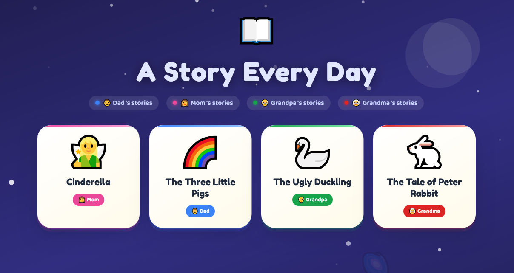
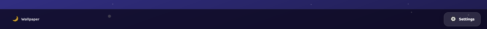
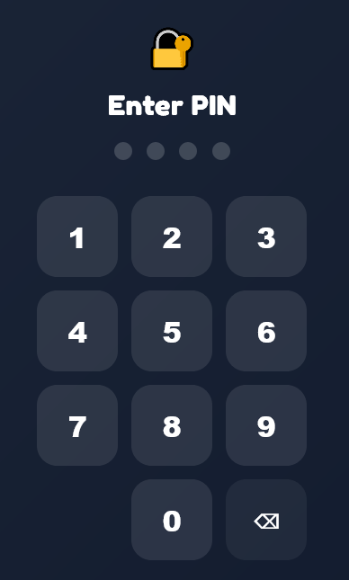
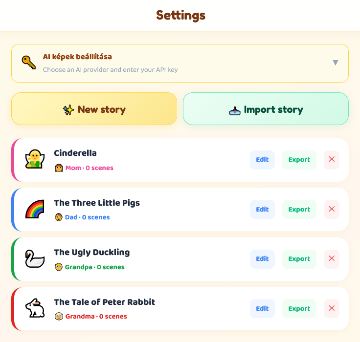
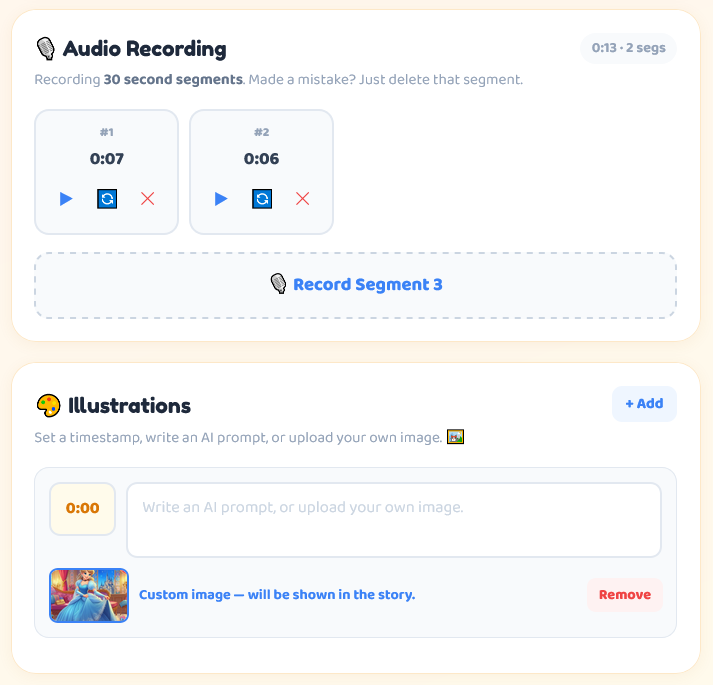
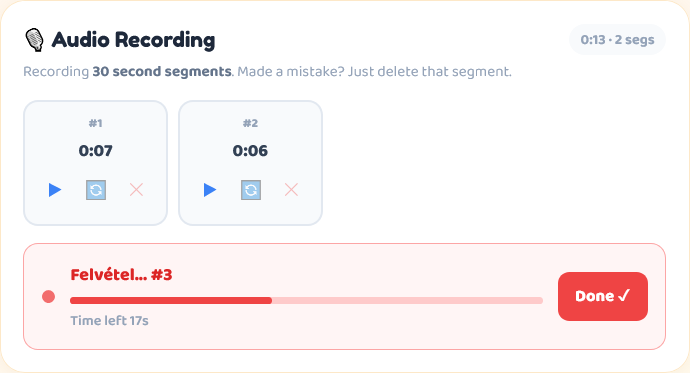
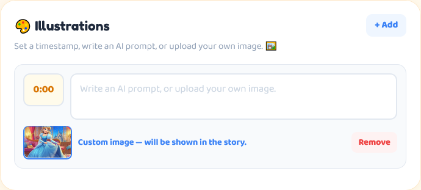
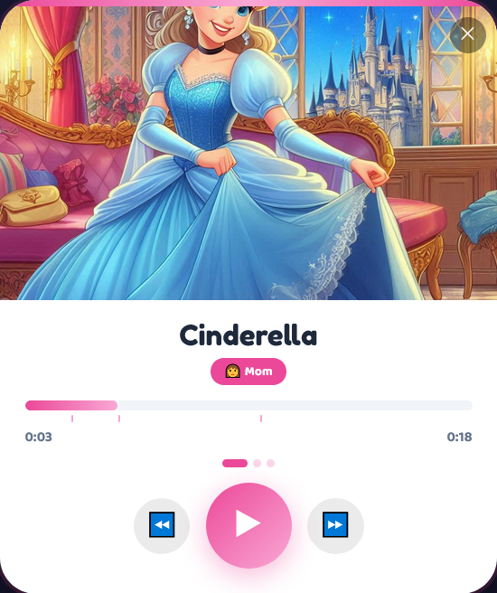
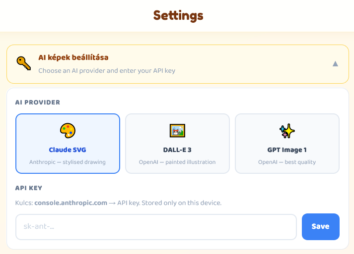
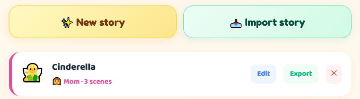

Storyo
Enregistrez des histoires du soir dans votre propre voix, ajoutez des illustrations IA et offrez aux enfants une expérience de livre d'histoires magique — où que vous soyez.
Storyo est une application de livre audio personnelle pour les familles. Un parent, grand-parent ou soignant enregistre une histoire avec sa propre voix, ajoute éventuellement des illustrations générées par IA, et l'enfant la lit comme un beau livre animé — même lorsque le narrateur n'est pas dans la pièce.
Enregistrez des histoires en segments de 30 secondes. Ré-enregistrez n'importe quel segment si vous faites une erreur — les autres restent intacts.
Les scènes apparaissent automatiquement pendant la lecture. Utilisez Claude SVG, DALL-E 3 ou GPT Image 1 — ou téléchargez vos propres images.
Panoramique et zoom Ken Burns sur les illustrations, fondus enchaînés fluides entre les scènes, une barre de progression et des points de scène.
Exportez un seul fichier .storybook — audio, images et métadonnées inclus — et envoyez-le via WhatsApp, e-mail ou toute application de partage.
Tout est stocké localement sur l'appareil. Pas de connexion, pas d'abonnement, pas de synchronisation cloud requise.

L'écran d'accueil affiche toutes les histoires enregistrées sous forme de vignettes en grille. Chaque vignette montre l'emoji, le titre de l'histoire et un insigne coloré pour le narrateur.
Code couleur des narrateurs
La bande colorée en haut de chaque vignette et l'insigne en bas indiquent qui a enregistré l'histoire :
Ouvrir une histoire
Appuyez sur n'importe quelle vignette pour ouvrir le Lecteur d'histoires immédiatement. L'audio se charge et les illustrations apparaissent automatiquement.
Barre inférieure
La barre inférieure comporte deux boutons :
- Bouton fond d'écran (gauche) — ouvre le sélecteur de thème de fond
- Paramètres (⚙️) (droite) — ouvre l'espace admin protégé par PIN
Appuyez sur le bouton fond d'écran en bas à gauche de l'écran d'accueil pour choisir un thème de fond. Le choix est sauvegardé entre les sessions.
Chaque thème a son propre fond animé — pétales tombants, étoiles scintillantes, nuages flottants, arbres qui se balancent, vagues océaniques et plus encore. Les couleurs s'adaptent automatiquement pour rester lisibles sur les thèmes clairs et sombres.

Appuyer sur ⚙️ Paramètres ouvre un écran PIN. Cela empêche les enfants de modifier ou supprimer accidentellement des histoires.

PIN par défaut
Changez-le après la première utilisation — appuyez sur Changer le PIN dans le coin supérieur droit des Paramètres.
Modifier le PIN
- 1Entrez le PIN actuelTapez votre PIN à 4 chiffres existant pour vous authentifier.
- 2Entrez le nouveau PINChoisissez n'importe quel nombre à 4 chiffres.
- 3Confirmez le nouveau PINTapez-le à nouveau. Si les deux correspondent, le PIN est mis à jour immédiatement.

Contenu de l'écran Paramètres
Une fois à l'intérieur, l'écran Paramètres affiche :
- La carte de configuration des illustrations IA
- ✨ Nouvelle histoire — créer une nouvelle histoire
- 📥 Importer histoire — importer un fichier
.storybookdepuis un autre appareil - La liste complète de toutes les histoires avec des boutons Modifier, Exporter et Supprimer
Appuyez sur ✨ Nouvelle histoire dans Paramètres pour ouvrir l'Éditeur d'histoire. L'éditeur est aussi utilisé pour modifier des histoires existantes — appuyez sur Modifier à côté d'une histoire dans la liste.

Narrateur
Sélectionnez qui raconte l'histoire. Cela définit le code couleur sur la vignette de l'écran d'accueil.
Titre
Tapez le nom de l'histoire. Le bouton Enregistrer reste grisé jusqu'à ce qu'au moins un caractère soit saisi.
Emoji
Choisissez un emoji dans la grille de plus de 80 animaux et personnages fantastiques. Il apparaît comme grande icône sur la vignette de l'écran d'accueil et comme image de remplacement dans le lecteur avant le chargement des illustrations.
Enregistrement
Appuyez sur Enregistré ✓ dans le coin supérieur droit. Le bouton affiche Enregistrement... pendant la sauvegarde, puis revient à Enregistré ✓. Les modifications sont sauvegardées à chaque appui — vous pouvez appuyer à tout moment pendant l'édition.
Les segments audio et les scènes ne sont écrits dans la mémoire que lorsque vous appuyez sur Enregistré ✓. Appuyez dessus après l'enregistrement de chaque segment pour être sûr.
L'audio est enregistré en segments de 30 secondes. Une histoire est composée de plusieurs segments réunis sans coupure lors de la lecture.

- 1Appuyez sur 🎙️ Enregistrer segmentL'enregistrement démarre immédiatement. Un point rouge clignote et une barre de progression indique le temps écoulé sur 30 secondes.
- 2Lisez votre histoire à voix hauteLe panneau clignote rapidement dans les 5 dernières secondes en guise d'avertissement. L'enregistrement s'arrête automatiquement à 30 secondes.
- 3Appuyez sur Terminé ✓ pour arrêter plus tôtVous n'avez pas à utiliser les 30 secondes. Appuyez sur Terminé ✓ à tout moment pour terminer le segment.
- 4Vérifiez et continuezLe segment terminé apparaît sous forme de carte avec sa durée. Appuyez sur ▶ pour l'écouter.
- 5Répétez pour les segments suivantsAppuyez sur Enregistrer segment 2, puis 3, etc. Il n'y a pas de limite au nombre de segments.
Ré-enregistrer un segment
Chaque carte de segment a un bouton 🔄 ré-enregistrer. Appuyer dessus remplace uniquement ce segment — tous les autres restent inchangés.
Supprimer un segment
Appuyez sur le bouton ✕ sur n'importe quelle carte de segment pour le supprimer. Les segments restants conservent leur ordre.
Aperçu d'un segment
Appuyez sur ▶ sur n'importe quelle carte de segment pour le lire immédiatement dans l'éditeur sans ouvrir le lecteur complet.
Appuyez sur Enregistré ✓ après avoir ajouté des segments. Si vous quittez l'éditeur sans sauvegarder, les nouveaux enregistrements sont perdus.
Les illustrations apparaissent automatiquement pendant la lecture aux horodatages que vous définissez. Chaque illustration est liée à un moment — lorsque la lecture l'atteint, l'image s'affiche progressivement avec un doux effet panoramique et zoom Ken Burns.

Ajouter une scène
- 1Appuyez sur + AjouterUne nouvelle ligne de scène apparaît avec un champ d'horodatage et un champ de prompt.
- 2Définir l'horodatageEntrez l'heure (au format
m:ss, p. ex.0:30) où l'illustration doit apparaître. Vous pouvez aussi entrer seulement des secondes, p. ex.45. - 3Écrire un prompt IA ou télécharger une imageDécrivez la scène pour l'IA, ou téléchargez votre propre image via le bouton sous le champ de prompt.
Illustrations générées par IA
Si un fournisseur IA est configuré, les illustrations sont générées automatiquement lors de la première lecture. L'application affiche 🎨 Peinture de la scène... pendant la génération.
Une fois générée, une illustration est stockée sur l'appareil et réutilisée à chaque lecture suivante. Le fournisseur IA ne facture que la première génération.
Images personnalisées (téléchargées)
Appuyez sur la zone d'image sous le champ de prompt pour télécharger une photo depuis votre appareil. Les images téléchargées ont la priorité sur la génération IA pour cette scène — le prompt IA est ignoré si une image est présente.
Appuyez sur Supprimer sur la miniature pour revenir à la génération IA pour cette scène.
Points de scène
Dans le lecteur, de petits points apparaissent sous la barre de progression — un par scène. Le point actif s'agrandit pour montrer quelle illustration est affichée.

Les illustrations IA sont optionnelles et nécessitent votre propre clé API d'un fournisseur pris en charge. La clé est stockée uniquement sur votre appareil et n'est jamais envoyée ailleurs qu'à l'API du fournisseur IA.

Fournisseurs pris en charge
| Fournisseur | Modèle | Sortie | Coût est./image | Qualité |
|---|---|---|---|---|
| 🎨 Claude SVG Anthropic |
claude-sonnet-4 | Vecteur SVG | ~$0.01 | Stylisé, géométrique |
| 🖼️ DALL-E 3 OpenAI |
dall-e-3 | PNG 1024×1024 | ~$0.04 | Pictural, réaliste |
| ✨ GPT Image 1 OpenAI |
gpt-image-1 | WebP 1024×1024 | ~$0.08 | Meilleure qualité |
Obtenir une clé API
Visitez console.anthropic.com → API Keys → Create Key
La clé commence par sk-ant-
Visitez platform.openai.com → API Keys → Create New
La clé commence par sk-
Configuration dans l'application
- 1Ouvrir Paramètres (⚙️)Entrez votre PIN pour accéder à l'espace admin.
- 2Appuyer sur la carte illustrations IALa carte s'agrandit pour afficher le sélecteur de fournisseur et le champ de clé.
- 3Choisir votre fournisseurSélectionnez Claude SVG, DALL-E 3 ou GPT Image 1.
- 4Coller votre clé APILa clé est masquée (champ de mot de passe). Appuyez sur Enregistrer.
Vous pouvez quand même utiliser l'application pleinement — téléchargez simplement vos propres images comme illustrations au lieu d'utiliser la génération IA.
Appuyez sur n'importe quelle vignette sur l'écran d'accueil pour ouvrir le lecteur. Le lecteur charge l'audio, puis affiche les illustrations automatiquement à mesure que l'histoire progresse.
Commandes
Le grand bouton central. Appuyez pour démarrer ou mettre en pause la lecture.
Avancez ou reculez de 10 secondes. Utile pour rejouer un moment.
Appuyez n'importe où sur la barre pour sauter à ce point de l'histoire. Les marqueurs de changement de scène apparaissent sous forme de petites lignes au-dessus.
Appuyez sur ✕ ou en dehors de la carte du lecteur pour fermer et retourner à l'écran d'accueil.
Comportement des illustrations
Lorsque la lecture atteint l'horodatage d'une scène, la nouvelle illustration s'affiche progressivement en 1,4 seconde pendant que la précédente disparaît. L'illustration panoramique et zoome ensuite lentement (effet Ken Burns) jusqu'au prochain changement de scène, créant une ambiance cinématique.
Si une illustration n'a pas encore été générée, l'application affiche 🎨 Peinture de la scène... et la génère en arrière-plan. Un petit badge 🎨 peinture suivante… apparaît lors du pré-chargement de la prochaine scène.
Les illustrations sont générées lors de la première lecture et mises en cache définitivement. Rejouer l'histoire est instantané — aucun appel API n'est effectué à nouveau.
En cas d'échec de génération
Si le fournisseur IA renvoie une erreur, un avertissement apparaît dans la zone d'illustration avec un bouton 🔄 Réessayer. Appuyer dessus tente de générer à nouveau l'illustration à partir de la position de lecture actuelle.
Les histoires peuvent être exportées sous forme d'un seul fichier .storybook et importées sur n'importe quel autre appareil. Le fichier contient tout : audio, illustrations, horodatages des scènes et métadonnées.

Exporter une histoire
- 1Ouvrir Paramètres (⚙️)Entrez votre PIN.
- 2Trouver l'histoireFaites défiler jusqu'à l'histoire dans la liste.
- 3Appuyer sur ExporterSur Android, le fichier est sauvegardé dans Téléchargements. Sur le web, un téléchargement commence automatiquement.
Importer une histoire
- 1Recevoir le fichier .storybookVia WhatsApp, Telegram, e-mail ou toute méthode de transfert. Sauvegardez-le sur l'appareil.
- 2Ouvrir Paramètres (⚙️)Entrez votre PIN.
- 3Appuyer sur 📥 Importer histoireUn sélecteur de fichiers s'ouvre. Sélectionnez le fichier .storybook.
- 4L'histoire apparaît dans la listeSi une histoire avec le même titre existe déjà, vous êtes invité à l'importer comme copie.
Format du fichier .storybook
exportedAt: "2025-01-15T20:30:00Z"
meta: { title, narrator, emoji, colorIdx, scenes }
segments: [ base64 WAV audio per segment ]
svgs: { illustrations IA en cache }
sceneImgs: [ uploaded custom images ]
Une histoire de 5 minutes avec plusieurs illustrations IA peut peser 10–25 Mo. Utilisez Telegram ou Google Drive pour le transfert — WhatsApp compresse les fichiers et peut les corrompre.
Le flux de travail prévu pour une famille avec deux appareils — un pour l'enregistrement, un pour que l'enfant écoute :
- 1Enregistrer sur l'appareil du parentCréez et sauvegardez l'histoire sur le téléphone du parent.
- 2Exporter le fichier .storybookAppuyez sur Exporter dans Paramètres. Le fichier est sauvegardé dans Téléchargements (Android) ou téléchargé dans le navigateur.
- 3Envoyer le fichier
- 4Importer sur l'appareil de l'enfantOuvrez l'application, allez dans Paramètres, appuyez sur 📥 Importer histoire et sélectionnez le fichier reçu.
- 5Lancer la lectureL'histoire apparaît sur l'écran d'accueil. Appuyez dessus pour écouter.
Un grand-parent peut enregistrer une histoire sur son propre téléphone et l'envoyer à ses petits-enfants partout dans le monde. L'enfant entend la vraie voix du grand-parent avec ses propres illustrations.
Chaque histoire est attribuée à un narrateur. Le narrateur détermine le thème de couleur utilisé pour la vignette de l'histoire sur l'écran d'accueil.
Le narrateur est défini dans l'Éditeur d'histoire et peut être modifié à tout moment en rouvrant l'éditeur et en sélectionnant une autre option.
Toutes les données sont stockées localement dans IndexedDB sur l'appareil. Pas de compte, pas de synchronisation cloud, pas de serveur.
Ce qui est stocké
segments:{id} — audio WAV en base64 par histoire
scene-imgs:{id} — images personnalisées téléchargées par histoire
svg-cache — illustrations IA générées (toutes les histoires)
api-key — votre clé API du fournisseur IA
ai-provider — fournisseur IA sélectionné
wallpaper — thème de fond sélectionné
app-pin — le PIN admin à 4 chiffres
Votre clé API est envoyée directement de votre appareil au fournisseur IA (Anthropic ou OpenAI). Elle n'est jamais envoyée ailleurs. L'application n'a pas de backend.
Limites de stockage
IndexedDB n'a pas de quota fixe de 5 Mo comme localStorage — il peut utiliser une part importante du stockage disponible de votre appareil. Une histoire de 5 minutes typique avec audio et plusieurs images IA utilise environ 15–30 Mo.
Qualité d'enregistrement
- Enregistrez dans une pièce calme — le bruit de fond est capté clairement
- Tenez le téléphone à une distance de parole normale, pas trop proche
- Les segments de 30 secondes donnent des points de pause naturels — planifiez votre histoire autour d'eux
- Utilisez le bouton de ré-enregistrement sur les segments individuels plutôt que de ré-enregistrer toute l'histoire
Rédaction de prompts IA
- Décrivez ce qui se passe dans la scène, pas seulement ce qui existe : « Un petit lapin traversant une prairie au clair de lune » fonctionne mieux que « lapin, prairie »
- Mentionnez l'ambiance et l'éclairage : « lumière dorée et chaude de l'après-midi », « forêt sombre et effrayante »
- Limitez les prompts à 1–2 phrases — les prompts plus longs ne donnent pas toujours de meilleurs résultats
- GPT Image 1 produit les résultats picturaux les plus détaillés ; Claude SVG convient mieux aux scènes stylisées plus simples
Synchronisation des scènes
- Définissez les horodatages de scène une ou deux secondes avant le moment où vous souhaitez que l'image apparaisse — le fondu prend environ 1,4 seconde
- Une scène à
0:00affiche une illustration dès le début de la lecture - Utilisez 3–5 scènes pour une histoire de 2–3 minutes — trop de scènes peut sembler écrasant
Envoi de fichiers
- Telegram — meilleure option, envoie des fichiers sans compression jusqu'à 2 Go
- Google Drive / Dropbox — fiable pour les grands fichiers
- E-mail — fonctionne bien pour les fichiers de moins de ~25 Mo
- WhatsApp — compresse les fichiers multimédias, peut causer des erreurs d'importation. À utiliser seulement si les autres options ne sont pas disponibles
Storyo · Manuel d'utilisation · Créé avec ❤️ pour les familles